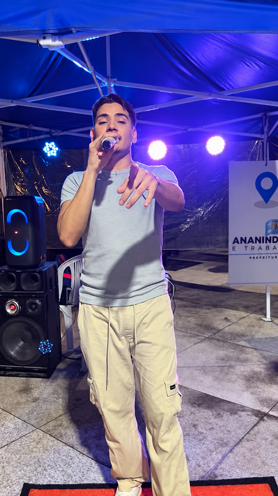
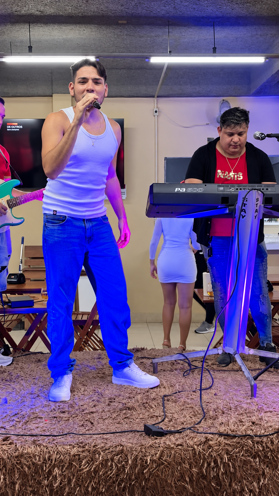
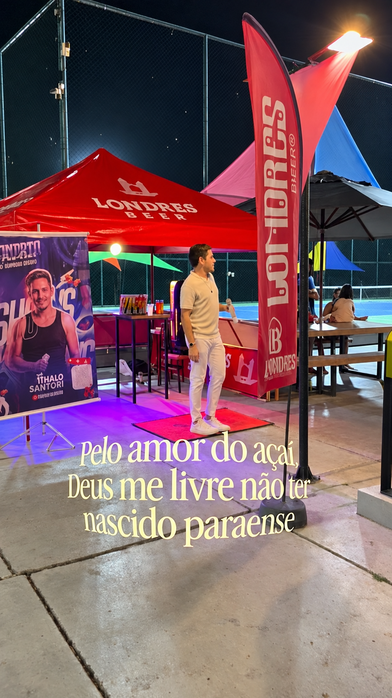

CANTOR & MUSICISTA
ITHALO
SANTORI.
A sua próxima noite
pede esse som.
ARROCHA · BREGA · MÚSICA PARAENSE

NO PALCO. NO SENTIMENTO.01 / O ARTISTA
DO PARÁ.
PRA sentir.
Entre a energia do arrocha e a identidade da música paraense.
Ithalo Santori é cantor e musicista. Suas apresentações e interpretações passeiam pelo arrocha, pelo brega e pelos sucessos do Pará, com a voz em primeiro plano.
Este é um convite para conhecer seu som: dos registros ao vivo à faixa “Não te quero mais”, em destaque em suas redes.
Mais de Ithalo no Instagram02 / DÊ O PLAY
UM SOM. UM SENTIMENTO.NÃO TE
QUERO MAIS.
ITHALO SANTORI
Tem música que a gente ouve.
Tem música que a gente sente.
03 / O SOM GANHA VIDA
A ENERGIA
É ao vivo.
A voz, os encontros e os palcos.
Assista a alguns registros no Instagram.

ENCONTROS NO PALCO
IDENTIDADE PARAENSE04 / PARA LEVAR COM VOCÊ
O ARTISTA. EM UM PDF.
Apresentação, música e contato em um material pronto para compartilhar.
05 / SHOWS & EVENTOS
O PRÓXIMO PALCO PODE SER O SEU.VAMOS FAZER
ESSA NOITE
acontecer?
Leve a voz de Ithalo Santori para o seu evento.
Para consultar disponibilidade e conversar sobre seu show, entre em contato pelo Instagram. Informe a data, a cidade e o tipo de evento.
Falar sobre um show @ithalosantoricantor